1. Introduction
Recent years have seen a wave of auto-research systems, including Auto Research [1], AI Scientist [2], and Analemma's FARS [3]. These projects have shown impressive progress in automated end-to-end scientific research. Rather than proposing another complex framework, we study a more direct setting: whether widely used general-purpose CLI agents (e.g., Claude Code, Codex, Kimi Code) can carry out research with only minimal guidance. Moreover, there is no comprehensive evaluation of the quality of agent-conducted research across diverse domains or under varying computational constraints (e.g., CPU-only vs. GPU environments), making it difficult to systematically assess the true capabilities and limitations of such agents in realistic research scenarios.
We evaluate three off-the-shelf CLI agents — Claude Code with Opus 4.6 [4, 5], Codex with GPT-5.4 [6, 7], and Kimi Code with K2.5 [8, 9] — using a minimal scaffold on 13 diverse CS domains (5 CPU-only + 8 GPU environments). We employ a peer-review protocol where three CLI agents evaluate each paper alongside its code, and additionally use the Stanford Agentic Reviewer [10] for external validation.
Key Findings
Each CLI agent develops a distinct research persona: Claude Code is the full-stack researcher — balancing both strategies (46% empirical, 33% novel methods) with the longest, most comprehensive papers. Codex is the empirical scientist — 87% empirical studies, highest integrity, but lower novelty. Kimi Code is the system builder — 79% of its papers are framed as novel methods with acronym-heavy names, yet it still scores low on novelty because many of its ideas sound more like repackaged existing work than genuinely new contributions.
Stanford Agentic Review (SAR) (0–10, ICLR scale):
- Among automatic systems: Claude Code (5.45) > FARS (5.06) > Codex (4.93) > Kimi Code (4.24). Our minimal scaffold with Claude Code (5.45) surpasses Analemma's FARS (5.06) using only a $200 Max subscription, compared to Analemma's $186,000 budget.
- Compared to 200 human-authored ICLR 2025 papers, Claude Code (5.45) scores above the weighted average of human-authored submissions based on the acceptance rate (5.42), sitting between accepted papers (5.59) and rejected papers (5.34).
Peer Review (PR) (0–10, ICLR scale):
- Claude Code (4.59) > Codex (4.51) > Kimi Code (3.38). Our PR is stricter than SAR because it gives the reviewer access to experiment code and execution logs, enabling systematic checks for fabricated or unsupported results. This may sometimes be overlooked even by the human expert.
- The major weakness for CLI agents are experimental rigor and significance. Agents perform relatively well on reference integrity (Codex: 8.41/10) and clarity (Codex: 7.47/10).
- Performance varies substantially across domains — Claude Code ranges from 5.33 (Probabilistic Methods) to 3.78 (Privacy in ML). Using stronger GPUs (RTX A6000→H100) shows no overall improvement, and in some cases even leads to lower scores, which further validates the major weaknesses.
2. Framework Overview
Each CLI agent follows a standardized pipeline:
- Ideation — Generate a research idea and experiment plan; self-review for up to 3 iterations.
- Experiments — Write and execute code, collect results; self-review for up to 3 iterations.
- Paper Writing — Produce a paper; self-review for up to 3 iterations.
- Review — Evaluate via Stanford Agentic Reviewer and triple peer review (all three agents review each paper alongside its code).
3. Experiment Setup
| Agent | Model | CPU Seeds | GPU Seeds | Trials/Seed | Total Papers |
|---|---|---|---|---|---|
| Claude Code | Opus 4.6 | 5 | 8 | 3 | 39 |
| Codex | GPT 5.4 | 5 | 8 | 3 | 39 |
| Kimi Code | K 2.5 | 5 | 8 | 3 | 39 |
CPU seeds: Causal Learning, Compiler Optimization, Data Integration & Cleaning, Operating System Design, Probabilistic Methods
GPU seeds: AI for Biology, Computer Vision, Datasets & Benchmarks, Generative Models, Interpretability, NLP, Privacy in ML, Supervised Representation Learning
Hardware: CPU-only or 1× NVIDIA RTX A6000 (48GB). Each agent gets 4 CPUs, 60GB RAM. We also conduct experiments for GPU experiments using NVIDIA H100 (80GB) GPUs.
Peer review (PR): Every paper is reviewed by all three agents (Claude Code, Codex, Kimi Code), scoring on 9 dimensions (novelty, soundness, significance, clarity, reproducibility, experimental rigor, references, reference integrity, results integrity) on a 0–10 ICLR scale.
Stanford Agentic review (SAR): Every paper is reviewed by Stanford Agentic Reviewer, which provides ICLR-calibrated scores on a 0–10 scale.
4. Main Results on Stanford Agentic Review
Automated Research Systems Comparison
We evaluate the performance of three CLI agents on the Stanford Agentic Reviewer (SAR). For comparison, we also collect scores from Analemma's FARS, which reports SAR scores for a total of 102 papers.
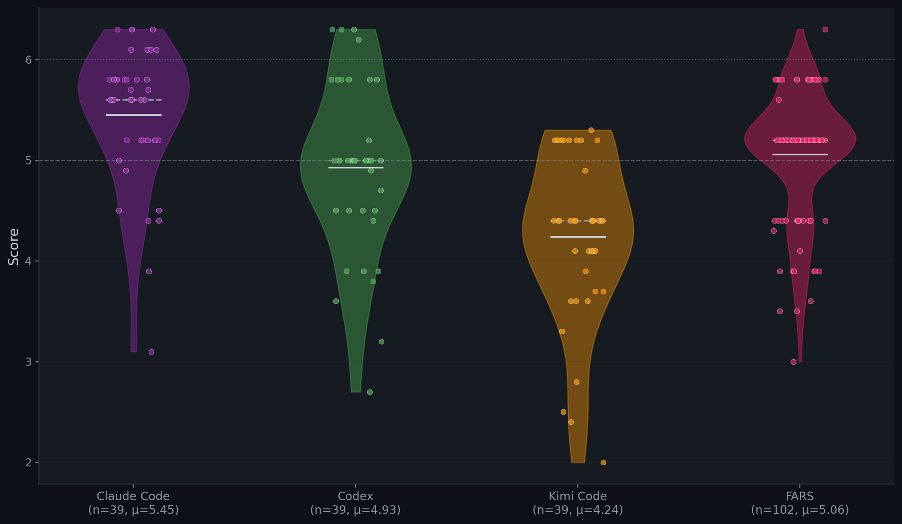
| System | n | SAR μ | SAR σ | Min | Max | ≥5.0 |
|---|---|---|---|---|---|---|
| Claude Code | 39 | 5.45 | 0.70 | 3.1 | 6.3 | 82% |
| FARS | 102 | 5.06 | 0.62 | 3.0 | 6.3 | 76% |
| Codex | 39 | 4.93 | 0.85 | 2.7 | 6.3 | 64% |
| Kimi Code | 39 | 4.24 | 0.84 | 2.0 | 5.3 | 26% |
Comparison with Human-Authored ICLR 2025 Papers
To calibrate these scores against human-authored research, we additionally sampled 200 real ICLR 2025 papers (100 accepted, 100 rejected) to the same Stanford Agentic Reviewer, establishing a human baseline.
| System | n | SAR μ | SAR σ | Human μ | Human σ |
|---|---|---|---|---|---|
| ICLR 2025 Accepted | 100 | 5.59 | 0.59 | 6.54 | 0.80 |
| Claude Code | 39 | 5.45 | 0.70 | — | — |
| ICLR 2025 Weighted (32%/68%) | 200 | 5.42 | 0.70 | 5.50 | 0.81 |
| ICLR 2025 Rejected | 100 | 5.34 | 0.75 | 5.02 | 0.81 |
SAR = Stanford Agentic Reviewer score. Human = average OpenReview score from ICLR 2025 human reviewers.
Score Heatmap (Seed × Trial)
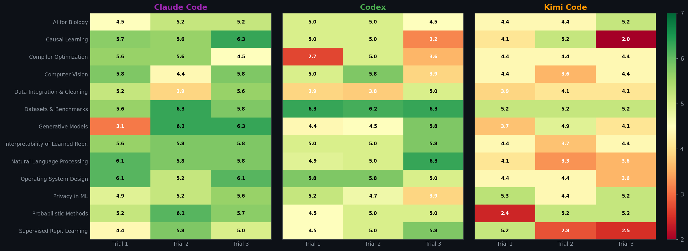
Per-Domain Breakdown
We break down SAR scores across 13 research domains (5 CPU-only, 8 GPU) and compare CPU vs GPU performance for each agent.
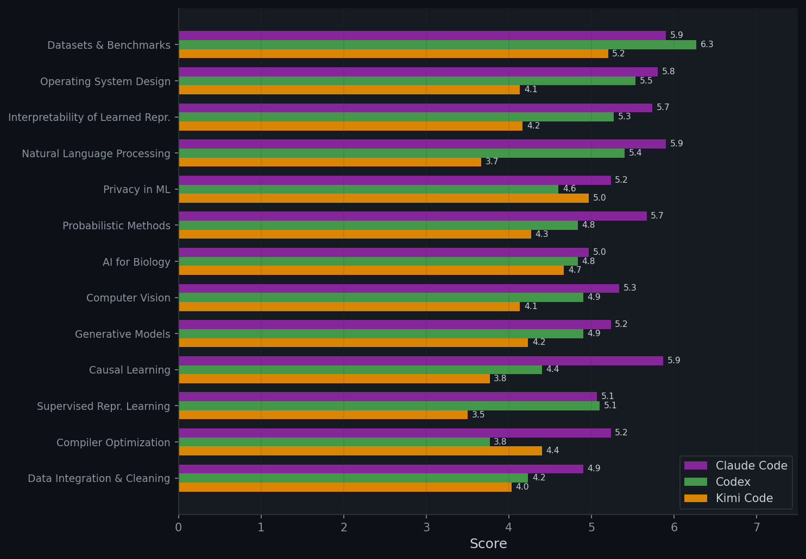
CPU vs GPU Performance (SAR)
| Agent | CPU | GPU | Gap |
|---|---|---|---|
| Claude Code | 5.49 | 5.42 | +0.07 |
| Codex | 4.55 | 5.16 | −0.61 |
| Kimi Code | 4.12 | 4.32 | −0.20 |
Qualitative Review Analysis
We analyze the text of Stanford reviews to identify common weakness themes via keyword matching across 7 categories: Experimental Design (baselines, ablations, evaluation, statistical rigor), Overclaiming (unsupported or exaggerated claims), Scope & Scale (limited or toy experiments), Clarity & Presentation (unclear writing, confusing notation), Results Inconsistency (contradictions or mismatches within the paper), Reference Quality (fake citations, placeholder references, future dates), and Novelty (incremental or trivial contributions). We also measure the balance between strengths and weaknesses across agents.
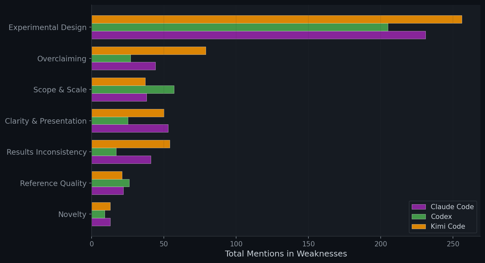
| Agent | Avg Strengths (words) | Avg Weaknesses (words) | Ratio (W/S) |
|---|---|---|---|
| Claude Code | 215 | 316 | 1.47 |
| Codex | 212 | 276 | 1.30 |
| Kimi Code | 184 | 339 | 1.85 |
5. Main Results on Peer Review
We design a peer review (PR) protocol where each of the three CLI agents reviews every paper alongside its experiment code, execution logs, and results artifacts. Unlike SAR, which evaluates only the PDF, this enables reviewers to verify whether reported results match actual experimental outputs, detect incomplete experiments, and identify fabricated claims. Additionally, reviewers are required to check reference validity via tools, flagging hallucinated or nonexistent citations.
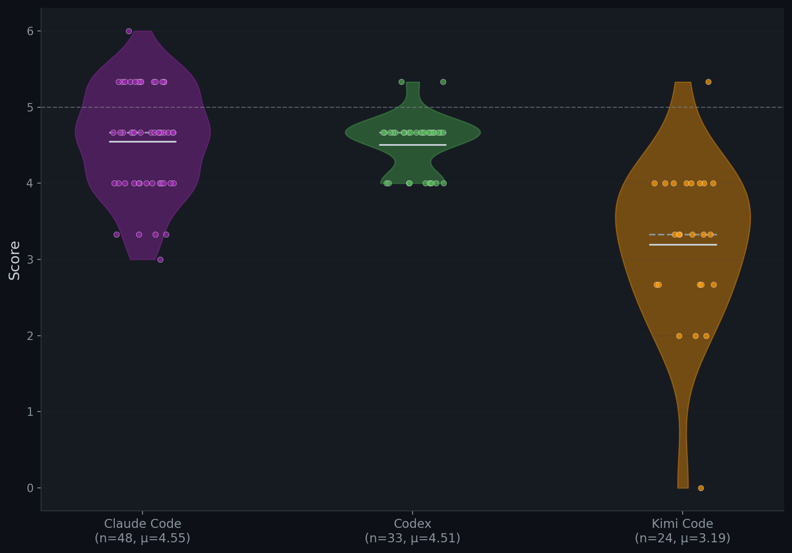
Score Heatmap (Seed × Trial)
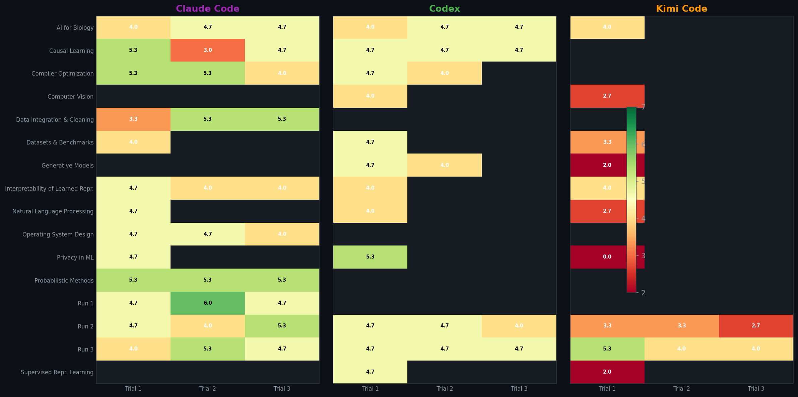
Per-Domain Breakdown
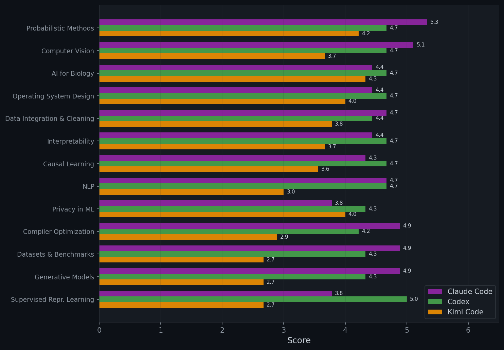
CPU vs GPU Performance
| Peer Review (PR) | Stanford (SAR) | |||||
|---|---|---|---|---|---|---|
| Agent | CPU | GPU | Gap | CPU | GPU | Gap |
| Claude Code | 4.73±0.20 | 4.50±0.10 | +0.23 | 5.49±0.16 | 5.42±0.15 | +0.07 |
| Codex | 4.53±0.07 | 4.50±0.05 | +0.03 | 4.55±0.23 | 5.16±0.15 | −0.61 |
| Kimi Code | 3.69±0.22 | 3.19±0.18 | +0.50 | 4.12±0.23 | 4.32±0.16 | −0.20 |
Per-Dimension Review Breakdown
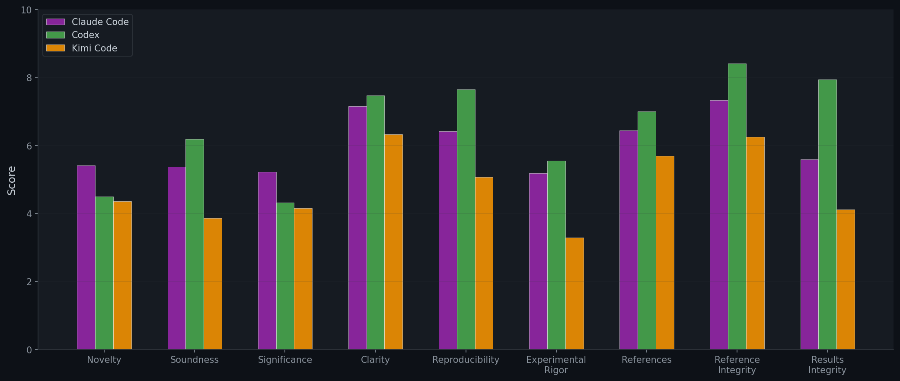
Integrity & Reference Analysis
Since our PR has access to experiment code and logs, reviewers can detect integrity issues that SAR cannot. We (the authors) manually annotated every paper across four integrity categories:
- Results mismatch — numbers reported in the paper don't match the actual
results.json, logs, or experiment outputs (e.g., Table 2 reports 0.85 accuracy but stored output shows 0.78). - Implementation mismatch — the paper claims to do things the code doesn't actually do: claimed components or ablations are never implemented, hyperparameters in the text differ from the config, or the method is not implemented as described (e.g., the paper describes a three-stage pipeline but the code only runs two).
- Both — papers flagged for both results and implementation mismatches.
- Fake reference — citations that don't exist, have fabricated authors, or have incorrect bibliographic metadata.
| Category | Claude Code | Codex | Kimi Code |
|---|---|---|---|
| Results mismatch | 3/39 (8%) | 1/39 (3%) | 1/39 (3%) |
| Implementation mismatch | 3/39 (8%) | 0/39 (0%) | 4/39 (10%) |
| Both (results + implementation) | 8/39 (21%) | 2/39 (5%) | 20/39 (51%) |
| Fake reference | 11/39 (28%) | 3/39 (8%) | 18/39 (46%) |
| Mean refs per paper | 15.1 | 12.8 | 10.5 |
| Reference integrity score | 7.34 | 8.41 | 6.26 |
Programming Language Usage
We analyze the programming languages and file counts across all agent-generated codebases to understand how each agent structures its experiments.
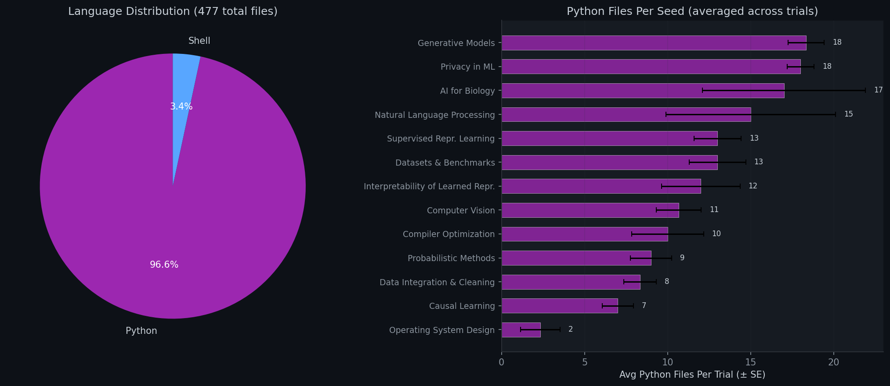
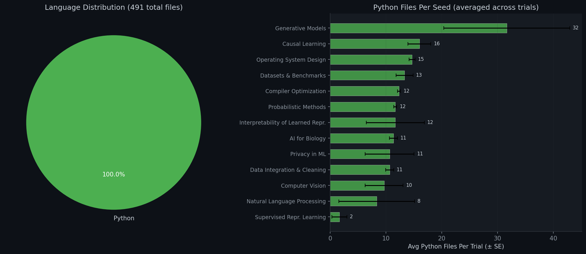
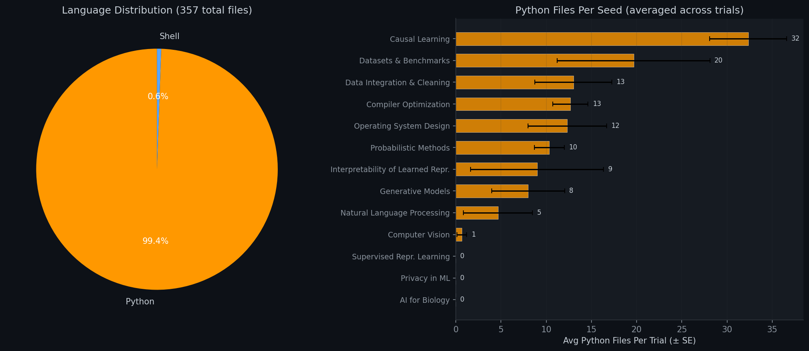
6. Research Style Analysis
Beyond scores, we compare how each CLI agent approaches research — what types of papers they write, how they structure arguments, and what their titles reveal about underlying research strategy. This comparative analysis shows that the three agents have developed fundamentally different research personas, which in turn explain many of the quality differences observed in Sections 4–5.
Research Type Distribution
We manually classify each paper based on its title and abstract into four categories: novel method (proposes a new named algorithm or system), benchmarking (creates evaluation tools), extension (improves existing methods), and empirical study (studies without proposing new methods).
| Type | Claude Code | Codex | Kimi Code |
|---|---|---|---|
| Novel method | 13 (33%) | 3 (8%) | 31 (79%) |
| New benchmark | 3 (8%) | 0 (0%) | 4 (10%) |
| Extension/improvement | 5 (13%) | 2 (5%) | 0 (0%) |
| Empirical study | 18 (46%) | 34 (87%) | 4 (10%) |
Title Structure Analysis
| Metric | Claude Code | Codex | Kimi Code |
|---|---|---|---|
| Avg title length | 102 chars | 99 chars | 92 chars |
| Question titles | 10% | 28% | 0% |
| Colon structure (Name: Subtitle) | 74% | 46% | 85% |
| Contains acronym (2+ caps) | 15% | 49% | 51% |
| Named method (starts with name) | 21% | 38% | 46% |
Title Vocabulary
The most frequent words in each agent's titles reveal distinct research personas:
| Agent | Top Keywords | Personality |
|---|---|---|
| Claude Code | learning when causal adaptive pipelines contrastive |
Full-stack researcher — spreads across research types |
| Codex | study benchmark negative matched controlled pilot |
Empirical scientist — controlled studies |
| Kimi Code | adaptive aware guided dynamic gradient contrastive |
System builder — named frameworks |
Title Patterns
Each agent has a distinct title style:
| Agent | Style | Example Titles |
|---|---|---|
| Codex | Question-based, hypothesis-testing. 28% use question marks — highest of any agent. |
"Do Shared Decoders Improve Prototype-Edit Reusability?" "When Does Clarification Supervision Transfer to Formal Reasoning?" "How Much Signal Is in Early Training Trajectories?" |
| Claude Code | Descriptive analysis. Unique "The X of Y" essayistic framing. |
"The Algebra of Compiler Passes: An Empirical Study of Idempotency" "The Bandwidth Knapsack: Optimal Migration Scheduling" "The Functional Anatomy of Sparse Features in Language Models" |
| Kimi Code | Acronym-heavy named frameworks. Zero question titles — always declarative. |
"CAGER: Causal Geometric Explanation Recovery" "DU-VPT: Decomposed Uncertainty-Guided Visual Prompt Tuning" "VAST: Velocity-Adaptive Spatially-varying Timesteps" |
Paper Structure
How do the papers differ in structure and technical depth?
| Metric | Claude Code | Codex | Kimi Code |
|---|---|---|---|
| Paper length (words) | 4,023 | 3,421 | 2,461 |
| Method section (words) | 572 | 531 | 394 |
| Equations | 3.8 | 2.3 | 4.0 |
| Figures | 4.8 | 4.1 | 0.8 |
| Tables | 6.0 | 4.2 | 4.0 |
| Algorithm blocks | 0.6 | 0.0 | 0.6 |
| Theorems / proofs | 0.3 | 0.0 | 0.4 |
| Complexity analysis | 77% | 10% | 64% |
All 39 papers per agent analyzed (117 total).
7. Reviewer Analysis
Our pipeline uses two layers of review. First, each agent self-reviews its own work at every stage (ideation, experiments, paper writing) for up to 3 revision rounds. Second, all three agents cross-review every paper in a peer-review setup. Below we examine whether self-review revision actually improves quality, and how much bias the peer reviewers introduce.
Self-Review Revision Effectiveness
When an agent scores below the self-review threshold, it revises and re-evaluates. The table below tracks whether scores improve, stay the same, or decline after revision.
| Agent / Gate | Improved | Same | Declined | Avg Delta |
|---|---|---|---|---|
| Claude Code / Idea | 100% | 0% | 0% | +2.1 |
| Claude Code / Experiment | 88% | 8% | 4% | +2.2 |
| Claude Code / Paper | 43% | 34% | 23% | +0.0 |
| Codex / Idea | 35% | 51% | 15% | +0.4 |
| Codex / Experiment | 78% | 20% | 2% | +2.0 |
| Codex / Paper | 64% | 29% | 7% | +1.5 |
| Kimi Code / Idea | 100% | 0% | 0% | +3.0 |
| Kimi Code / Experiment | 91% | 9% | 0% | +2.2 |
| Kimi Code / Paper | 61% | 34% | 5% | +1.6 |
Peer Review Bias
Each paper is reviewed by all three agents. The score distributions reveal large systematic differences between reviewers.
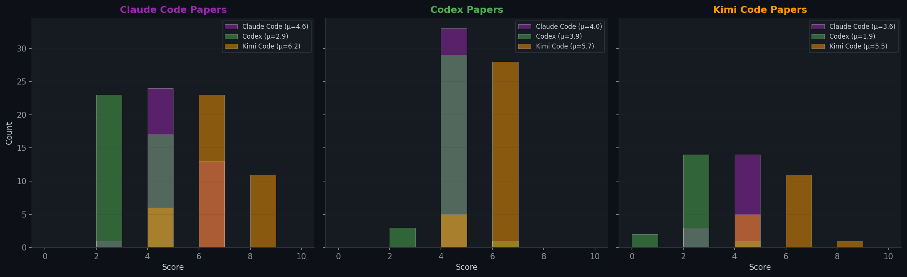
| Reviewer ↓ / Agent → | Claude Code | Codex | Kimi Code | Avg Given |
|---|---|---|---|---|
| Claude Code | 4.6 | 4.0 | 3.2 | 3.9 |
| Codex | 2.9 | 3.9 | 1.9 | 2.9 |
| Kimi Code | 6.2 | 5.7 | 5.0 | 5.7 |
8. Time Analysis
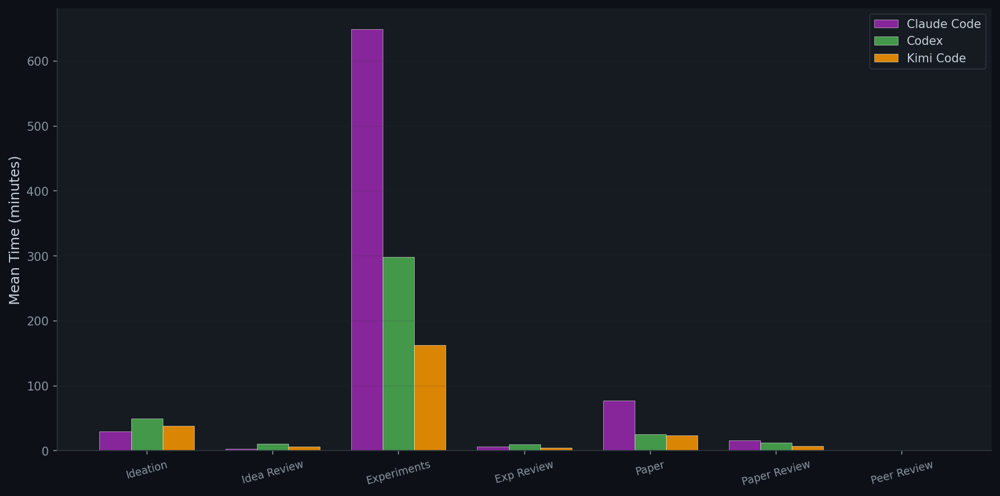
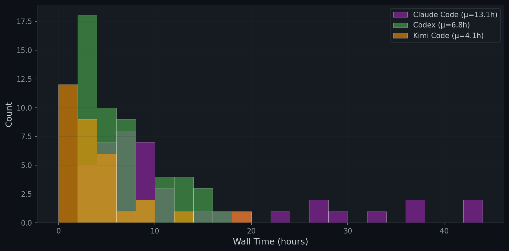
9. H100 GPU Scaling Experiments
Do agents produce better research with more powerful hardware? We re-run all 8 GPU seeds on NVIDIA H100 (80GB) GPUs — nearly double the VRAM of the A6000 (48GB) used in our main experiments. All other settings remain identical. Codex runs 3 independent trials per seed (24 total).
Overall Comparison: A6000 vs H100
Per-Seed Breakdown (Peer Review, H100)
| Seed | Codex (H100) | Codex (A6000) |
|---|---|---|
| AI for Biology | 4.89 | 4.67 |
| Interp. of Learned Repr. | 4.78 | 4.67 |
| Computer Vision | 4.33 | 4.33 |
| Natural Language Processing | 4.22 | 4.33 |
| Privacy in ML | 4.22 | 4.00 |
| Supervised Repr. Learning | 4.22 | 4.67 |
| Generative Models | 3.78 | 4.33 |
| Datasets & Benchmarks | 3.67 | 4.67 |
| Average | 4.26 | 4.50 |
Codex H100: 3 trials per seed, scores averaged. A6000 scores from main experiments (Section 5).
10. Case Studies
To make the differences between agents concrete, we highlight one representative paper per agent. For each, we show the title, scores, a brief summary, and excerpts from the peer review illustrating what the reviewers found noteworthy.
Claude Code — Entropy-Guided Adaptive Token Merging
| Title | Entropy-Guided Adaptive Token Merging for Robust and Efficient Vision Transformers |
| Domain / Trial | Computer Vision (GPU), Trial 1 |
| SAR Score | 5.8 / 10 |
| Peer Review | 6.00 avg (scores: 8, 6, 4) · Revision |
Summary. The paper proposes EGTM, a training-free method that adapts the token merging ratio in Vision Transformers based on per-layer CLS-row attention entropy. Under clean inputs, aggressive merging is applied for speed; under distribution shift (ImageNet-C), merging is dialed back to preserve accuracy.
Reviewer excerpt (strength). "Novel and well-motivated approach using attention entropy as a distribution shift signal for adaptive token merging."
Why it stands out. This exemplifies Claude Code's "The X of Y" descriptive style — a clean analysis paper that frames a mechanistic insight (entropy as signal) into a practical, training-free recipe.
Open in new tab · Download PDF
Codex — Early Training Trajectories as Pseudo-Group Signal
| Title | How Much Signal Is in Early Training Trajectories? A Matched-Budget Study of Pseudo-Group Inference |
| Domain / Trial | Supervised Representation Learning (GPU), Trial 3 |
| SAR Score | 5.8 / 10 |
| Peer Review | 5.33 avg (scores: 6, 6, 4) · Reject |
Summary. A controlled empirical study of whether short early-training trajectories provide better pseudo-group signal than simpler matched-cost alternatives (output-only statistics or warmup-end features) for annotation-free robustness under spurious correlations.
Reviewer excerpt (strength). "Rigorous experimental design with matched budgets isolates the specific question of signal quality vs compute cost."
Why it stands out. Codex's characteristic style — a question-titled empirical study with strict budget matching, no over-claiming. Classified as "Reject" because findings are negative, but the execution is clean.
Open in new tab · Download PDF
Kimi Code — Acceptance-Rate Adaptation in Discrete MCMC
| Title | Comparative Analysis of Adaptation Criteria for Gradient-Based Discrete MCMC: When Acceptance-Rate Trumps Jump-Distance |
| Domain / Trial | Probabilistic Methods (CPU), Trial 3 |
| SAR Score | 5.2 / 10 |
| Peer Review | 4.67 avg (scores: 6, 4, 4) · Reject |
Summary. A systematic empirical comparison of three hyperparameter adaptation criteria for gradient-based discrete MCMC — acceptance-rate targeting, jump-distance maximization, and a hybrid — showing that acceptance-rate targeting often outperforms jump-distance metrics.
Reviewer excerpt (strength). "Explicit acknowledgment of prior work — the authors do NOT overclaim novelty; they clearly state they are not the first to propose acceptance-rate adaptation."
Why it stands out. One of Kimi's cleaner papers — it uses a "Name: Subtitle" structure typical of Kimi outputs, but avoids the integrity issues common in the rest of its corpus.
Open in new tab · Download PDF
References
- Andrej Karpathy. "Auto Research." 2025. github.com/karpathy/autoresearch
- Chris Lu, Cong Lu, Robert Tjarko Lange, Jakob Foerster, Jeff Clune, and David Ha. "The AI Scientist: Towards Fully Automated Open-Ended Scientific Discovery." arXiv:2408.06292, 2024.
- Analemma Intelligence. "Introducing FARS: Fully Automated Research System." 2025. analemma.ai/blog/introducing-fars
- Anthropic. "Claude Opus 4.6." 2026. anthropic.com/news/claude-opus-4-6
- Anthropic. "Claude Code." code.claude.com
- OpenAI. "Introducing GPT-5.4." 2026. openai.com/index/introducing-gpt-5-4
- OpenAI. "Codex." openai.com/codex
- Moonshot AI. "Kimi K2.5." kimi.com/ai-models/kimi-k2-5
- Moonshot AI. "Kimi Code." kimi.com/code
- Stanford ML Group. "Stanford Agentic Reviewer." paperreview.ai